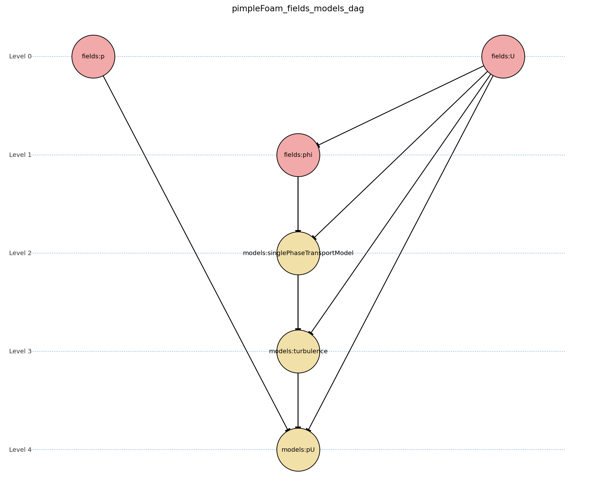

Architecture¶
This document describes the overall architecture of FoamAdapter, including both the C++ core and Python interface components.
Overview¶
FoamAdapter is designed a multi-physics simulation python-based simulation framework. It provides a flexible and modular architecture that allows users to easily extend and customize the simulation setup.
The architecture provides following features to achieve the goals outlined in the goals and features document:
Easy coupling of multiple domains and physics
Field and model initialization based on dependency graphs
Modular solver design that computes the data dependencies at runtime
Plugin architecture for easy extension with new models and fields
The main abstraction is that each domain has one physics module assigned to it that defines the governing equations and models for that domain. Multiple domains can be defined with input files and the coupling between the domains is handled automatically based on the defined physics modules.
The following sections describe the main feature and and implementation example to give a high level overview of the architecture. More details are provided described in the section for each feature.
Solver Execution Model¶
FoamAdapter defines solver behavior as a dependency-driven execution model. Each solver declares its required fields and models, and the runtime system constructs a directed acyclic graph (DAG) to determine the correct execution order.
The following diagram illustrates the workflow for two common solver types for a conjugate heat transfer scenario:
%%{init: {'flowchart': { 'htmlLabels': true, 'wrap': true }}}%%
flowchart TB
subgraph setup1 ["setup "]
direction TB
S1A["Initialize Fields"]
end
subgraph setup2 ["setup"]
direction TB
S2A["Initialize Temperature Field"]
end
subgraph S1 ["non-thermal-fluid solver"]
direction TB
S1C["Momentum Predictor"]
S1C --> S1E["Solve Energy Equation"]
S1E --> S1F["Pressure Corrector<br/>PISO Loop"]
S1F --> S1J["Update turbulence Model"]
end
subgraph S2 ["thermal-solid solver"]
direction TB
S2B["Solve Energy Equation"] --> S2D["Update Solid Properties"]
end
setup1 --> S1C
setup2 --> S2B
S1E --> S2B
S2B --> S1E
The diagram shows two selected solvers: a non-thermal-fluid solver and a thermal-solid solver. Each solver has its own setup phase and computational steps, with interactions between the two solvers for energy exchange.
The solution steps of each solver provide the dependencies and the runtime system constructs a DAG to determine the correct execution order based on these dependencies.
@model("fluidSolver")
class DomainA:
@step(order=1, model)
def momentum(self, ctrl): pass
@step(order=2, model)
def solve_energy(self, ctrl): pass
@step(order=3, model)
def pressure_corrector(self, ctrl): pass
@step(order=4, model)
def update_turbulence(self, ctrl): pass
@model("solidSolver")
class DomainB:
@step(order=1, model)
def solve_energy(self, ctrl): pass
@step(order=2, model)
def update_solid_properties(self, ctrl): pass
A solver is defined as a class with multiple steps, each step has to declare its dependencies. Additional models can be executed before and after each step to modify the behavior and add additional physics.
This allows to easily extend existing solvers with new physics without modifying the core solver implementation and promotes code reuse.
Note
The implementation is still work in progress but only details may change.
Modular Solver Architecture¶
The modular solver architecture briefly touched on in the previous section is a key feature of FoamAdapter and allows for flexible composition of complex multi-physics simulations. An example of the modular solver architecture is illustrated in the following diagram:
flowchart TD
subgraph MAIN ["Main Solver Loop"]
STEP1["Momentum Predictor<br/>Solve velocity equation"]
STEP2["Additional Physics Modules"]
STEP3["Pressure Corrector<br/>Ensure mass conservation"]
STEP4["Field Updates<br/>Correct U, φ, turbulence"]
end
STEP1 --> STEP2
STEP2 --> STEP3
STEP3 --> STEP4
%% Physics Extensions (simplified)
subgraph AddPhysics ["Additional Physics Modules"]
direction TB
POROSITY["Porosity"]
ROTATION["Rotating Reference Frame"]
BUOYANCY["Boussinesq Approximation"]
end
POROSITY -.-> STEP1
ROTATION -.-> STEP1
BUOYANCY -.-> STEP2
BUOYANCY -.-> STEP3
style MAIN fill:#E3F2FD
style AddPhysics fill:#E3F2FD
style STEP1 fill:#2196F3,color:#fff
style STEP2 fill:#FF9800,color:#fff
style STEP3 fill:#9C27B0,color:#fff
style STEP4 fill:#607D8B,color:#fff
In this architecture, the main solver loop consists of core steps such as momentum prediction and pressure correction. Additional physics modules (e.g., porosity, rotation, buoyancy) can be plugged into the workflow to modify the behavior of these core steps.
This modular design enables users to easily add or remove physics effects without altering the fundamental solver structure, promoting code reuse and maintainability. The additional physics modules need to define their dependencies and the runtime system ensures that they are executed at the correct point in the solver loop.
Note
implementation is still work in progress
Field and Model Initialization¶
As the fields and solver needs to be initialized in the correct order before the solver run, FoamAdapter provides a structured initialization phase to ensure that the necessary fields and models are properly set up.
The fields and models are stored lazily at first with the dependencies and a DAG is solved to determine the correct initialization order.
The following code snippet illustrates how a turbulence model and a derived field (face velocity) are defined with their dependencies:
class TurbulenceModel:
@property
def dependencies(self) -> list[str]:
return ["U", "phi", "singlePhaseTransportModel"]
@property
def description(self) -> str:
return "Incompressible turbulence model"
def __call__(self, deps: dict):
U = fields.get_field(deps, "U")
phi = fields.get_field(deps, "phi")
singlePhaseTransportModel = models.get_model(deps, "singlePhaseTransportModel")
turbulence = incompressibleTurbulenceModel.New(U, phi, singlePhaseTransportModel)
return turbulence
@fields.Fields.deps("U")
def create_face_velocity(deps: dict) -> surfaceScalarField:
U = fields.get_field(deps, "U")
phi_field = createPhi(U)
return surfaceScalarField(
value=phi_field,
dimensions=(0, 1, -1, 0, 0, 0, 0),
description="Face flux field",
)
The same approach is used for all fields and models in FoamAdapter, ensuring a consistent and reliable initialization process.
Plugin Architecture¶
Motivation¶
Modern scientific and engineering workflows require flexible simulation frameworks that can be easily extended and customized. FoamAdapter’s plugin architecture is designed to enable users and developers to add new physics models, boundary conditions, and solver modules without modifying the core codebase. This approach promotes maintainability, collaboration, and rapid prototyping of new features.
Concept¶
FoamAdapter implements a runtime-extensible plugin/config system using Pydantic discriminated unions and a registry pattern. The core idea is to allow new plugin types (e.g., models, fields, solvers) to be registered dynamically, either at runtime or via Python entry points (setuptools). Each plugin type (such as physics models or boundary conditions) is managed by a registry, which collects all available plugin classes and exposes a unified configuration model for input validation and schema generation.
Background: Pydantic Discriminated Unions
Pydantic supports discriminated unions for type-safe configuration, but the set of types in the union must be known at model definition time. For example:
from typing import Literal, Union
from pydantic import BaseModel, Field
class Cat(BaseModel):
pet_type: Literal['cat']
meows: int
class Dog(BaseModel):
pet_type: Literal['dog']
barks: float
class Lizard(BaseModel):
pet_type: Literal['reptile', 'lizard']
scales: bool
class Model(BaseModel):
pet: Union[Cat, Dog, Lizard] = Field(discriminator='pet_type')
n: int
This works well for static unions, but it is not possible to add new types to the union at runtime. This is a challenge for plugin systems, where extensibility is required.
How FoamAdapter Solves This
Plugins are registered using a decorator-based API, making it easy for users to define and integrate new modules. Whenever a new plugin is registered, the system automatically rebuilds the Pydantic model for the plugin type, updating the discriminated union to include all registered types. This means that the configuration model always reflects the current set of available plugins, and input validation is always up to date.
For example, after registering a new shape plugin, you can immediately use the updated model for validation:
ShapeBase.register(TriangleConfig)
shape = ShapeBase.plugin_model(shape={"shape_type": "triangle", "base": 3.0, "height": 4.0}, color="yellow")
This dynamic rebuilding of the model enables true runtime extensibility and ensures that input validation and schema generation always match the available plugins. The plugin_model attribute needs to be called to obtain the up-to-date model for the plugin type.
Usage¶
To add a new plugin, users simply define a new Python class for their model or field and register it with the appropriate base class:
from foamadapter.core.plugin_system import PluginSystem
@PluginSystem.register(discriminator_variable="model", discriminator="model_type")
class ModelBase(BaseModel):
name: str
@ModelBase.register
class MyCustomModel(BaseModel):
model_type: Literal["custom"]
parameter: float
# Instantiate a model config
config = ModelBase.create(model={"model_type": "custom", "parameter": 1.23}, name="example")
Plugins can also be discovered and registered automatically via Python entry points, allowing third-party packages to extend FoamAdapter seamlessly. The unified configuration model and schema make it easy to build UIs, validate inputs, and document available plugins.
Model Introspection and Schema Generation¶
Model configuration and validation in FoamAdapter are implemented using Pydantic, which provides native support for input validation and automatic JSON Schema generation. This mechanism forms the basis for model discovery, UI integration, and automated documentation across the framework.
Pydantic’s schema generation enables the following functionality:
Input validation: Ensures model configurations are consistent and type-safe.
UI integration: Allows user interfaces to be generated dynamically from model definitions.
Automatic documentation: Exposes field names, types, and constraints for all models.
Metadata generation: Facilitates downstream tools to query and reason about model structures.
AI-assisted workflows: Supports schema-driven interactions with generative AI systems.
To obtain a model’s JSON Schema representation, use the model_json_schema() method provided by Pydantic:
# For a registered plugin or configuration model
schema = ShapeBase.plugin_model.model_json_schema()
# For any Pydantic model
schema = MyModel.model_json_schema()
This interface provides a uniform mechanism for introspection of all models in FoamAdapter, making it possible to programmatically discover available fields, their data types, validation rules, and default values.
This requires that all plugin, solver, or model use Pydantic to configure the inputs.